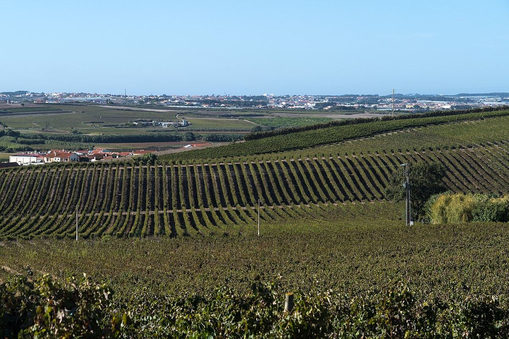

Lisboa
The Lisboa region, formerly known as Estremadura, stretches north of the capital along the Atlantic coast. It combines a large output of regional wines with small historic appellations such as Colares, Bucelas and Carcavelos.

History
The area around Lisbon has supplied the capital with wine for centuries, and some of its wines became famous abroad: white Bucelas was prized in England in the nineteenth century, and fortified Carcavelos was already being exported in the eighteenth century. During the twentieth century the region focused mainly on high-volume wines made by cooperatives. The regional geographical indication was called Estremadura for many years and took the name Lisboa in 2009. In recent decades many quintas have emerged that make quality wines, often offering good value.
Territory and climate
The region forms a long strip north of Lisbon, between the Atlantic and the Tagus valley. The influence of the ocean is very strong: cool winds, fog and moderate temperatures, especially on the coast. The Montejunto range acts as a barrier, separating the areas most exposed to the sea from the inland ones, which are somewhat warmer and more sheltered. Soils are mainly clay-limestone, with areas of sand along the coast.
Appellations
Several DOCs lie within the region. Colares, by the Sintra hills, is famous for its vines planted in sand on the dunes, many of them ungrafted, since phylloxera cannot thrive in these soils; the red Ramisco and the white Malvasia de Colares are grown there, and the vines grow low, sheltered from the wind by cane fences. Bucelas, close to the capital, is devoted to Arinto whites with vibrant acidity. Carcavelos, now almost swallowed up by urban growth, produces a fortified wine in very small quantities. The list is completed by Alenquer, Arruda, Torres Vedras, Óbidos and Encostas d’Aire, as well as Lourinhã, devoted to grape brandy.
Grapes and styles
The leading whites are Arinto, Fernão Pires, Vital and Malvasia; among the reds, Castelão, Touriga Nacional, Tinta Roriz or Aragonez (Tempranillo) and Alicante Bouschet, alongside international varieties such as Syrah and Cabernet Sauvignon, which are widely used in the regional wines. Most of the output is sold as Vinho Regional Lisboa, with fruity reds and fresh whites, while the small DOCs preserve very distinctive traditional styles, such as the tannic, long-lived Ramisco reds of Colares.